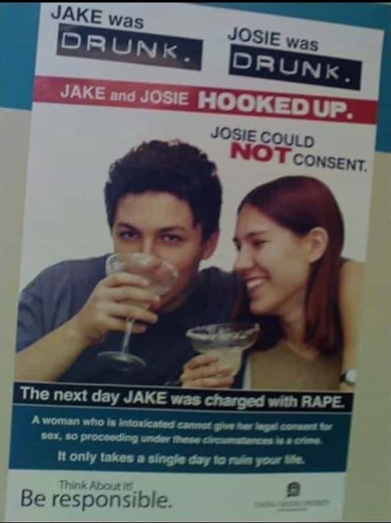

< < < Back
Why Wasn’t Elizabeth Sandlin Charged With Rape If The Man She Had Sex With Was “Blind Drunk”? – Return Of Kings
My colleague Theodore Gumbril wrote an excellent piece recently about the assault conviction of Samuel Price for biting Elizabeth Sandlin’s buttocks during a rough sex session. The conviction itself was a farce, but another significant issue escaped the attention of the courts and society at large: why wasn’t Sandlin charged with rape?
She herself said that Price “was very drunk, blind drunk” and large numbers of men, including Welsh soccer player Ched Evans, have been convicted for having sex with women deemed too drunk to consent.
The failure to reprimand Sandlin for an act that would have landed a man in jail for rape represents another victory for female privilege. Our Western court systems, designed to act as the series of checks and balances that prevent witch hunts or selective prosecutions, are in an undeniably parlous state.
For the moment, as hard as it is, I want you to separate Samuel Price’s ludicrous assault conviction from this case. Theodore covered this aspect most ably only weeks ago. What we will focus on here is Sandlin’s pussy pass for what is otherwise rape when committed by men.
Some questions to get us started:
- How could Elizabeth Sandlin presume that Samuel Price was consenting if he was blind drunk? Having had sex before is not consent, surely?
- Why did Elizabeth Sandlin engage in sex with Samuel Price if he was physically picking her up in the excited, manic state she described to the court?
- Why was this behavior not interpreted as the sign of someone who was not only blind drunk but whose judgment and cognition was manifestly impacted by his intoxication?
Alcohol is not consent… unless you’re a woman having sex with a drunk male
The supposedly two-way street has always been one-way.
Many of you will remember my piece about the epidemic of drunk men being raped by fat females. Ched Evans, to my straight eyes a good-looking male specimen, gets controversially convicted for “raping” a drunk female but no one in the judiciary or legal fraternity seemingly bats an eyelid about the tens of thousands of British or American men every week who bed large mammals after 20 beverages.
Beyond human replicas of dirigibles, and when the genders are reversed, plenty of normal-sized women have alleged rape after consuming a handful of drinks. It doesn’t matter in these cases whether their (male) sexual partner drank four times as much.
The common theme with all these cases is that men are never the victims. It’s a job description filled only by females. We live in a society where feminists and others tell us that women want sex as much as men.
When it comes to alcohol, however, consent is always presumed for men, both by the partners and the legal system. The inherent dichotomy between the genders in this regard is astounding. Women like Elizabeth Sandlin, in the context of a court case, can say they fornicated with a “blind drunk” male. A man saying the same thing about a woman is interpreted as a confession of rape.
Enter feminist crusader Alison Saunders
It is not a crime to drink, but it is a crime for a rapist to target someone who is no longer capable of consenting to sex though drink.
– Alison Saunders, England and Wales’ Director of the Crown Prosecution Service (CPS). She uses gender neutral language here but the history of alcohol-related rape prosecutions makes it clear that this only applies to female “victims”.
She wants to end the culture of “blaming” drunk women who have sex and allege rape. So how many times has her CPS prosecuted women for having sex with drunk men?
Since entering the role, England and Wales’ highest-ranking public prosecutor, Alison Saunders, has started a crusade to redefine what rape is. Men must now prove to police investigators that a woman consented (How exactly? A notarized document? An “audio consent” MP3? A secret and therefore illegal sex tape video?).
She wants to, she says, dismantle the culture that prevents “victims” from coming forward and being “heard” when they’ve taken drugs or consumed alcohol before sex.
If women have been held down by a culture that prevents so-called accountability for rape, what about men? And if this culture of denial exists, as Saunders says, how can we explain that women have never been convicted for taking advantage of drunk men or men incapacitated by narcotics?
Presuming that her vague and tendentious reading were accurate, it seems that this culture precludes substance-affected men from reporting women substantially more than the opposite dynamic. Saunders, unsurprisingly, has precious little to say about the impunity with which an Elizabeth Sandlin can say that she slept with a blind drunk man. It’s simply not on her radar.
Women have been taught for years, regardless of what “reformers” say, to treat drunken sex they regret later as rape. Alison Saunders’ arrival to the top job only signals an acceleration of this phenomenon. Typically, feminists and government activists will claim that “patriarchy” socializes women in ways that prevent them from going to the authorities after being raped whilst intoxicated.
On the other hand, no such discount is applied to men, who, it is presumed, have full, unimpeded access to the criminal complaints system, despite the paucity or non-existence of men claiming to have been raped following drinking. Their outlook, so the narrative goes, has not in any sense been undermined by the gender social status quo. In fact, as men they are the beneficiaries of a gargantuan marketplace of “male privilege”. But is that really so?
No amount of pinching will end this dream

Why isn’t the person on the right regarded as a rapist?
Those who sniff glue and claim the legal system allows anyone to make a complaint are kidding themselves. Men like Samuel Price, if they regarded themselves as victims, would never be given the opportunity to be taken seriously. Male incapacitation during sex is institutionally not considered to be rape. The letter of the law may say otherwise, using gender-neutral language, but the spirit is what matters here.
Any time you hear about another Ched Evans being convicted for rape over a drunken girl (assuming her alcohol levels were actually measured and the complaint didn’t come weeks, months or years later), conjure up the memory of Elizabeth Sandlin talking about “sleeping” with a “blind drunk” Samuel Price.
If we were talking about an Elijah Sandlin and a Samantha Price, the end of the last sentence would instead read “Elijah Sandlin talking about about raping a blind drunk Samantha Price.”
Read More: The Truth About False Rape Accusations That All Men Should Know